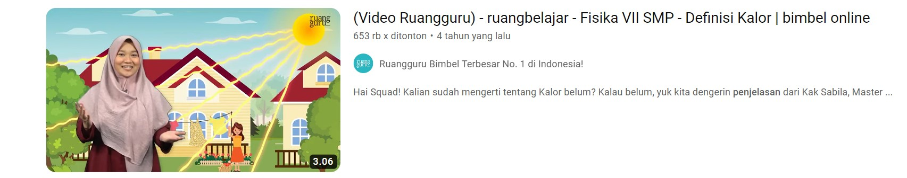

APA ITU RUANG GURU?
November 24,2023 Views : 8.562
Ruang Guru adalah platform pembelajaran daring yang memiliki banyak fitur (boleh jadi, terlalu banyak) untuk mendukung kegiatan belajar dan pembelajaran siswa di luar sekolah yang menggunakan media Aplikasi Mobile (Android & iOs).
Fitur utama yang ditawarkannya berupa video pembelajaran yang dibawakan oleh Guru-Guru terkualifikasi, dilengkapi oleh animasi yang memperjelas materi yang disampaikan.
Watch This
HADAPI UTBK-SNBT 2024 DENGAN BIMBEL INTENSIF RUANG GURU!
Maret 20,2023 Views : 31.443
Siapkan dirimu dengan soal UTBK-SNBT sesuai standar BP3 Kemdikbud
Tersedia 7 tipe subtes (4 Tes Potensi Skolastik & 3 Tes Literasi) dengan beragam format soal
Tes Potensi Skolastik
- Penalaran Umum
- Pemahaman Bacaan dan Menulis
- Pengetahuan dan Pemahaman Umum
- Pengetahuan Kuantitatif
Tes Literasi
- Literasi B. Indonesia
- Literasi dalam B. Inggris
- Penalaran Matematika
Watch This

PENJELASAN MEMBELAJARAN YANG SERU!
April 30,2021 Views : 116.832
Februari 3,2020 Views : 653.160
Pasti kamu sudah mencoba belajar dengan video di ruangbelajar ‘kan? Kalau belum, artinya kamu ketinggalan nih, gengs!
Video belajar di ruangbelajar sudah dikenal beda daripada video belajar lainnya. Kira-kira, apa sih bedanya video di ruangbelajar dengan yang lainnya? Video di ruangbelajar punya berbagai jenis video yang sesuai dengan kebutuhan belajar kamu.
Tak hanya berisi puluhan ribu video super lengkap yang sesuai dengan kurikulum sekolah, di ruangbelajar juga ada banyak fitur menarik yang disesuaikan dengan tingkat pemahaman kamu masing-masing.
Watch This
Watch This